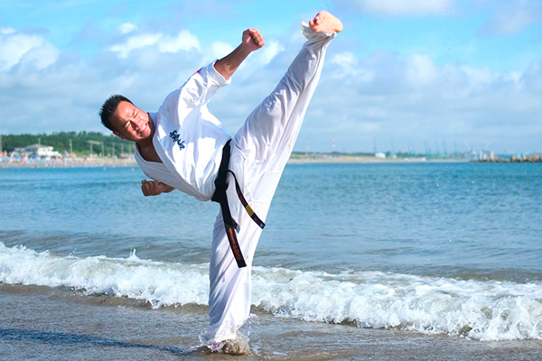

Программа на 5 кю
(Синий пояс)
-
Базовая ударная техника:
- 1. Дзенкуцу дачи : ой цуки пять движений вперед , поворот пять движений вперед и поворот в дзенкуцу дачи.
- 2. Гияку цуки пять движений вперед, поворот и пять вперед. Поворот в дзенкуцу дачи.
- 3. Ой цуки / гияку цуки / Гедан барай пять связок вперед, поворот , пять связок вперед. Поворот.
- 4. Маэ гери пять движений вперед, поворот, пять движений вперед.
- 5. Маваши гери пять движений вперед, поворот, пять движений вперед, поворот.
-
Техника защиты с контратакой:
- 6. Аге уке в дзенкуцу дачи на пять движений вперед и пять назад без поворота (далее одинаково для всех блоков)
- 7. Сото уке ....
- 8. Учи уке.....
- 9. Гедан барай.....
- 10. Шуто уке в кокуцу дачи без перехода на контратаку.
-
Двигательные навыки:
- 11. Колесо вперед три раза. Назад три раза.
- 12. 25 отжиманий от пола.
- 13. Двойной подшаг с гияку цуки. Пять подшагов.
- 14. дорожки с маваси гери. По длине экзаменационной площадки, но не более 8 метров. Правой ногой вперед, поворот, левой назал ( стопу бьющей ноги на пол не ставить).
-
Работа в парах:
- 15. Из боевой стойки по пять раз гияку цуки в голову на контроль в
левосторонней стойке, затем в правосторонней стойке.
- 16. Из боевой стойки по пять раз гияку цуки в корпус, в ответ партнер выполняет
гедан барай с контратакой гияку цуки либо кизами цуки в голову на контроль. ( дистанция 5 см до атакуемой поверхности).
-
КАТА:
- 17. Хеян шодан или Хеян нидан(по усмотрению экзаменуемого).